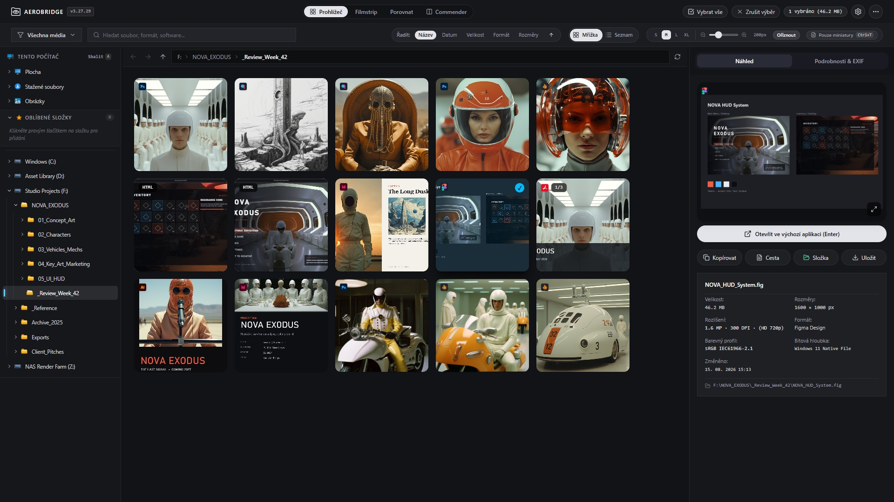
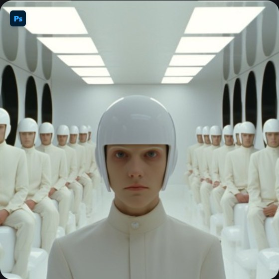
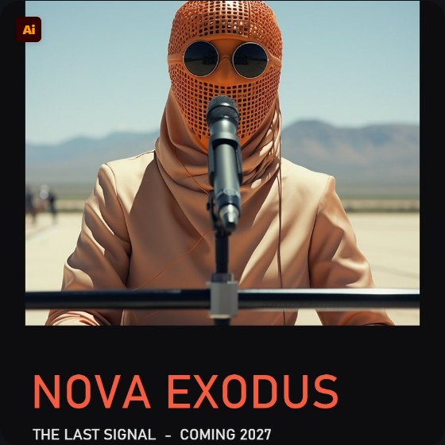
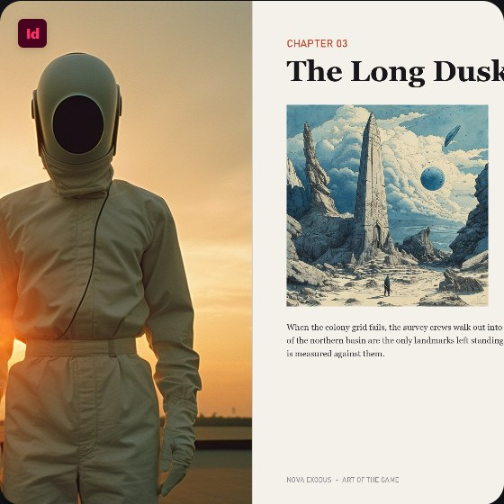
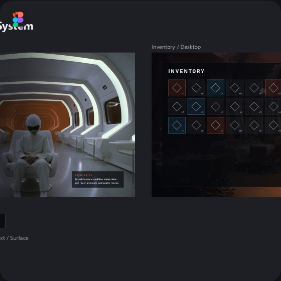
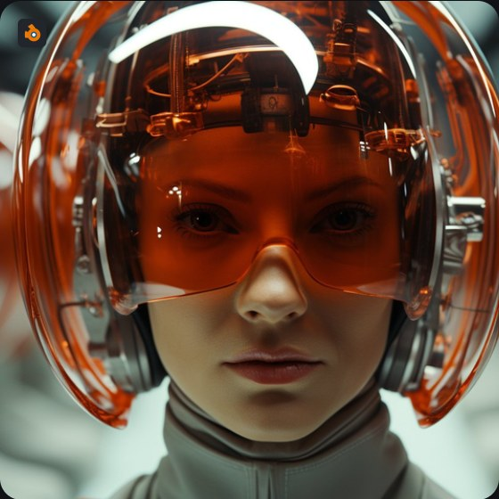
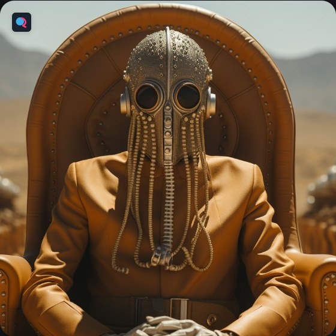
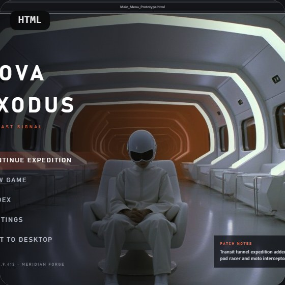
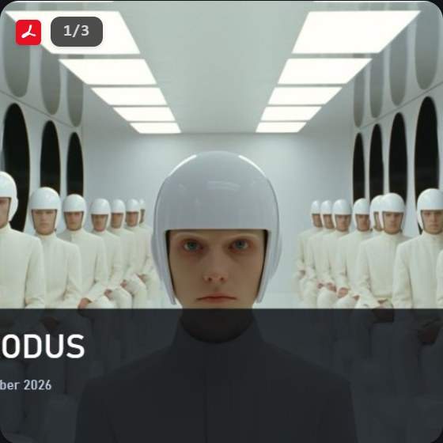

Design & tisk
Adobe CC a Figma
Náhledy PSD, AI, INDD a FIG bez otevírání aplikací. Inspektor ukazuje rozměry, megapixely, barevný profil a u JPEG, PNG a PSD tiskové rozlišení v DPI.
PSDAIINDDFIGPDF
AeroBridge Studio je prohlížeč s širokou podporou formátů — včetně Adobe PSD, AI a INDD, Figmy, Blenderu a ZBrush — spojený s dvoupanelovým správcem souborů, terminálem pro AI agenty a zápisníkem. Vše v jednom okně, bez Adobe účtu a bez přepínání mezi aplikacemi.

Navrženo designérem pro designéry
Nejde o obecného správce souborů. Je to úzký, konkrétní flow pro práci s Figmou, Adobe Creative Cloud, Blenderem a ZBrush — a pro vibecoding, kdy vedle návrhu běží AI agent v terminálu.
Najít soubor, zkontrolovat náhled a tiskové rozlišení, spustit agenta nad projektem, zapsat poznámku. Obvykle to znamená Průzkumník, prohlížeč, terminál a editor. Tady je to jedno prostředí.
Náhledy PSD, AI, INDD a FIG bez otevírání aplikací. Inspektor ukazuje rozměry, megapixely, barevný profil a u JPEG, PNG a PSD tiskové rozlišení v DPI.
Náhled scény z .blend, vložený náhled ze ZPR a ZTL, vykreslení STL a OBJ přímo v mřížce.
HTML prototypy se vykreslí jako statický snímek vedle návrhů z Figmy. Verze lze porovnat vedle sebe.
ConPTY terminál v panelu Commanderu, otevřený v aktuální složce. Claude Code a další CLI agenti běží vedle souborů, se kterými pracují.
Kopírování, přesun a přejmenování přes F5–F8, přetažení souborů rovnou do Photoshopu nebo Blenderu.
IPTC a XMP, klíčová slova, oblíbené složky, řazení podle formátu či rozměrů, dávkové přejmenování a export.
Náhledy nevznikají přes nainstalované aplikace. AeroBridge otevře soubor, najde v něm uložený náhled nebo vykreslí obsah a zobrazí ho. Funguje to i na počítači bez Adobe, Figmy nebo Blenderu. U JPEG, PNG a PSD čte i tiskové rozlišení (DPI) z hlavičky souboru.

Rychlý náhled z hlavičky souboru, ve velkém pohledu plný sloučený obraz. Čte i skutečné rozměry a DPI.

Vykreslení PDF-kompatibilního obsahu, záložně XMP a PostScript náhled.

Vložený JPEG náhled stránky nebo XMP xmpGImg. Podporuje i IDML.

Miniatura z balíčku .fig exportovaného z Figmy.

Náhled scény z bloku TEST, který Blender ukládá do souboru.

Sloučený obraz mergedimage.png z archivu dokumentu.

Stránka se vykreslí bez skriptů jako bezpečný statický snímek.

První strana přes pdf.js offline, počet stran přímo na kartě.
Dále: ZBrush (ZPR, ZTL), STL, OBJ, Camera RAW (CR2, CR3, NEF, ARW, DNG, RAF, ORF, RW2), Adobe XD, SVG, EPS, TIFF a video. Projekty After Effects jako karta s ikonou.
Čtyři pohledy nad stejnou složkou. Přepínání je okamžité a výběr zůstává zachovaný.
Kopírování, přesun a přejmenování přes F5–F8 jako v Total Commanderu. Každý panel umí přepnout na terminál (PowerShell, CMD, WSL) nebo na zápisník s náhledem Markdownu a JSONu.
Aplikace běží lokálně a ke složkám přistupuje jen tam, kam ji pustíte. Nic se neodesílá.
Bez přihlášení, bez Creative Cloud, bez předplatného.
Náhledy, řazení i exporty fungují bez připojení.
Aplikace neodesílá data o používání ani o souborech.
Nativní Windows aplikace postavená na Tauri v2 a Rustu.
Zdrojový kód je otevřený a lze ho dál upravovat.
Virtualizovaná mřížka a náhledy načítané na pozadí.
Operace, které jinak vyžadují skripty nebo další aplikace.
Stáhněte instalátor, otevřete složku s projektem a podívejte se, co v ní je.